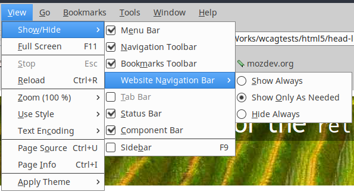
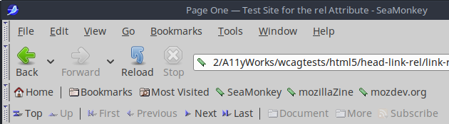

Test for the rel attribute on the link element (inside head).
This page uses the following link elements:
<link rel="top" href="index.html" title="Home page" />
<link rel="next" href="link-rel-2.html" title="Page Two" />
<link rel="last" href="link-a-4.html" title="Page Eight" />Using the rel attribute on the link element used to be supported by Netscape Navigator (long defunct)
and is still supported by its successor
SeaMonkey.
If link elements for navigation are present in the head element, SeaMonkey can display a
“Website Navigation Bar”.
The above links can be made visible in SeaMonkey: go to View, then Show/Hide, then, under Website Navigation Bar,
choose one of the tree available options: Show Always, Show Only As Needed or Hide Always.
See the screenshot below:

When the user has chosen to make the Website Navigation Bar visible, SeaMonkey's toolbars look as follows (while the current page):

After parsing the link elements in the head, the Website Navigation Bar displays
clickable buttons for “Top”, “Next” and “Last”.
All other buttons on the navigation bar are grayed out, i.e. the buttons for
“Up”, “First”, “Previous”, “Document”, “More” and “Subscribe”.
Unfortunately, this navigation bar cannot be accessed using the Tab key and there is no documentation on how to reach the navigation bar using only the keyboard. This makes the Website Navigation Bar inaccessible to blind users and other keyboard-only users.